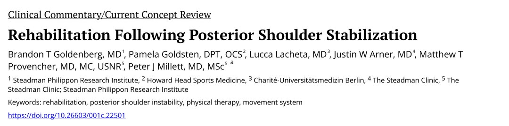
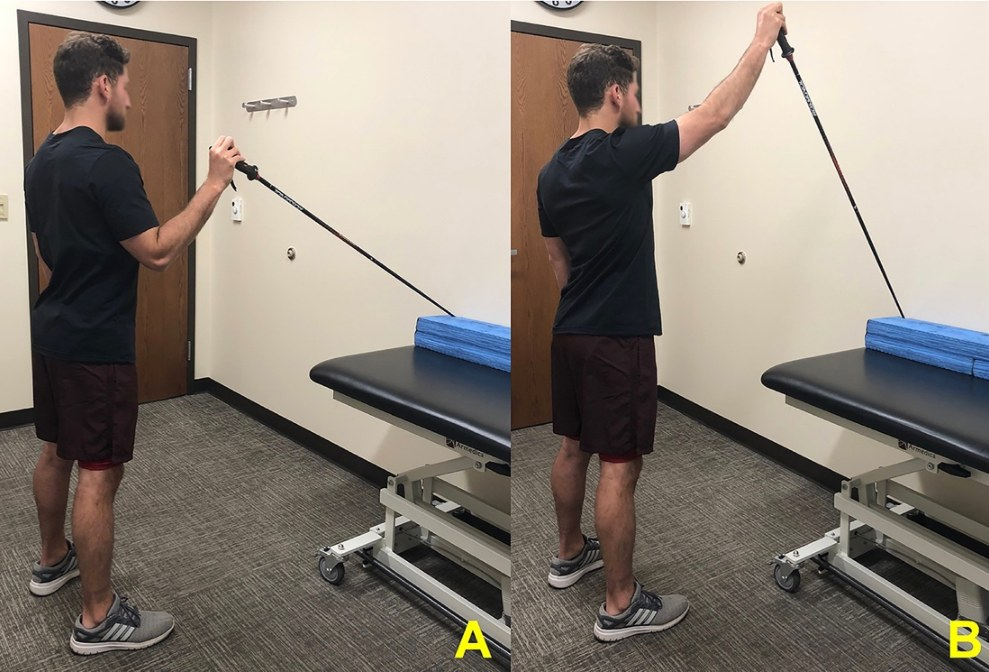
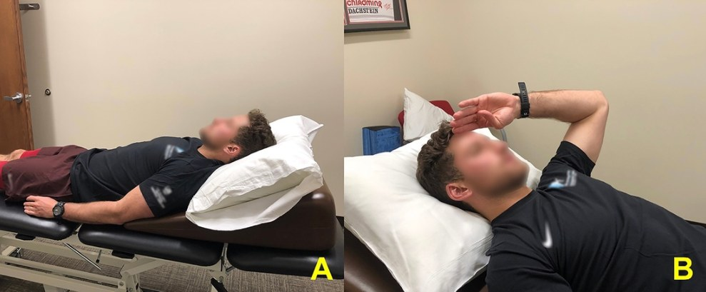
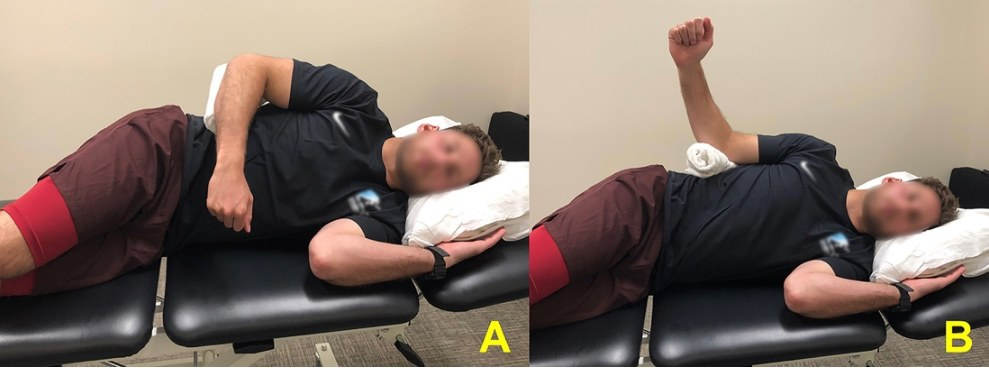
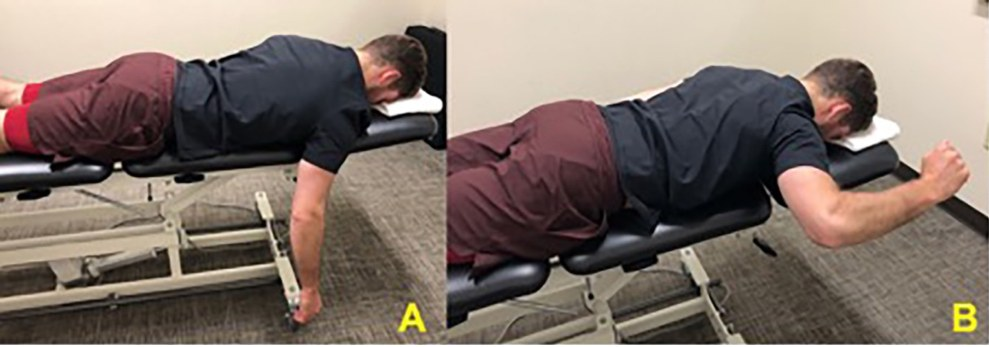
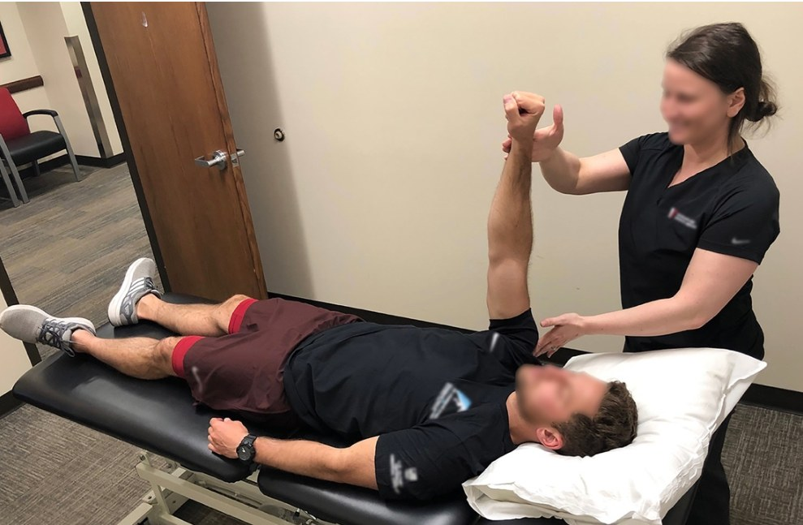
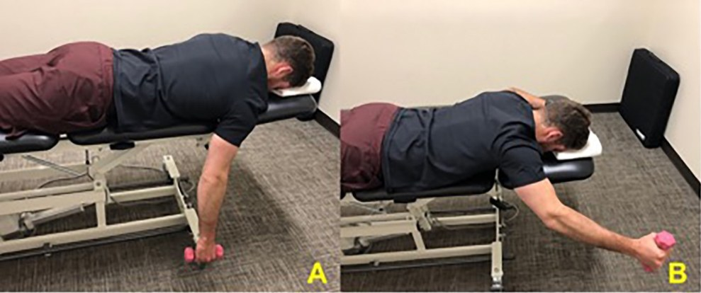
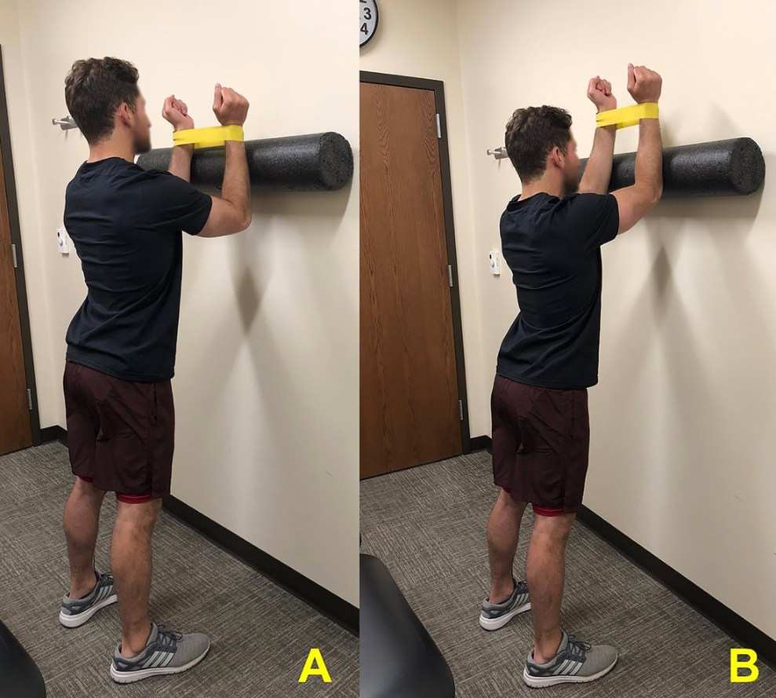
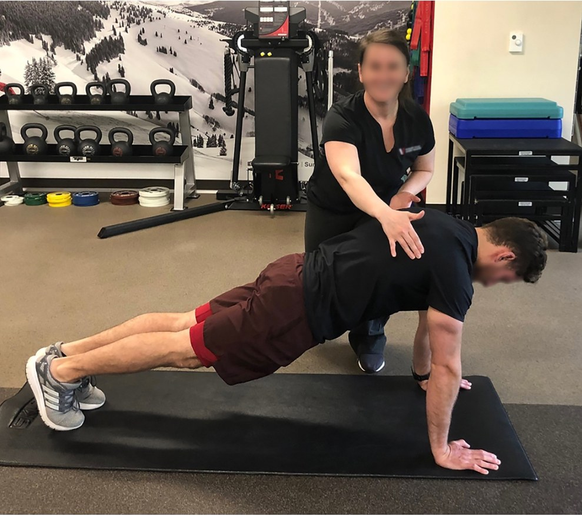
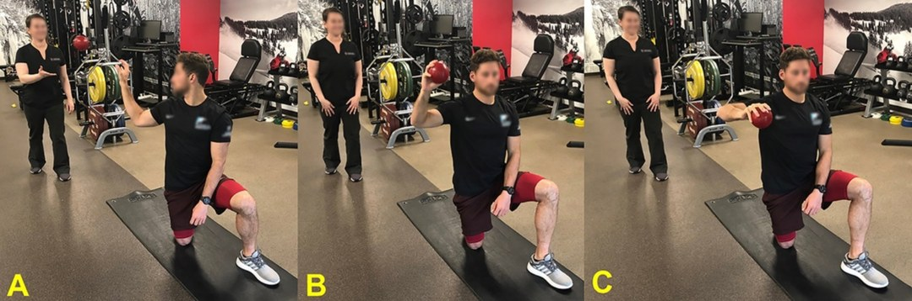

🔖原文首页（IJSPT 2021 年第 16 卷第 3 期）
📚 文献卡片
▪ 英文原题：Rehabilitation Following Posterior Shoulder Stabilization（肩关节后方稳定术后的康复）
▪ 作者：Brandon T. Goldenberg, Pamela Goldsten, Lucca Lacheta, Justin W. Arner, Matthew T. Provencher, Peter J. Millett
▪ 机构：Steadman Philippon 研究所 · Howard Head 运动医学 · 柏林夏里特医学院 · The Steadman Clinic
▪ 期刊：International Journal of Sports Physical Therapy（IJSPT）
▪ 年卷期：2021;16(3):930-940
▪ PMCID：PMC8168996
▪ 文章类型：临床评论 / 现代概念综述（Clinical Commentary / Current Concept Review）
▪ 证据级别：5 级
▪ 关键词：rehabilitation · posterior shoulder instability · physical therapy · movement system
"Posterior shoulder instability has historically accounted for 2-5% of instability cases. However, recent reports estimate posterior instability accounts for approximately 24% of all operative glenohumeral instability cases."
"过去认为后方不稳只占肩关节不稳的 2%～5%，但近期报道显示，在接受手术的盂肱关节不稳中，后方不稳约占 24%。"
• 高发人群：过头投掷运动员（挥臂后期和随球动作对后方结构压力大）、举重者，以及经常做俯卧撑、格斗、负重训练的军人
• 症状不典型：主诉多是疼痛而不是“脱出来”，容易延误诊治、影响运动表现
• 病因：急性创伤、反复微创伤、随意性脱位
保守治疗无效时，常做关节镜后方盂唇修复（±关节囊修复）。但关于术后康复的文献很少，这篇评论给出了一套以标准为导向的五阶段术后康复方案。
| 阶段 | 大致时间 | 核心目标 |
|---|---|---|
| Ⅰ 保护期 | 术后 0～6 周 | 保护修复、止痛消肿、宣教；第 2 周起限制范围内被动活动 |
| Ⅱ 主动活动与肌耐力 | 约 5～6 周起 | 恢复主动活动度、肩袖和肩胛肌耐力、正常肩肱节律 |
| Ⅲ 初期抗阻 | ≥8 周 | 弹力带、轻哑铃加强肩袖和肩胛周围肌 |
| Ⅳ 进阶强化与爆发力 | 约 3 个月起；爆发力约 5 个月 | 闭链训练、后方负荷下的控制、增强式训练 |
| Ⅴ 重返运动 | 通过功能测试后 | 专项训练，如投掷程序 |
一句话概括：6 周内别让肩后方受力，之后按标准一步步加载。
• 盂唇：加深关节盂，像一圈“防剪切缓冲垫”
• 动态稳定：肩袖和肩胛胸壁肌群；肩胛下肌对后方稳定尤其重要；肩胛前伸、内侧缘稳定的良好节律也很关键
• 后方结构薄弱：盂肱下韧带后束比前束薄；后方和多向不稳患者的后关节囊截面积更小，所以较小的力量就可能造成损伤，这也解释了为什么反复微创伤是常见原因
• 关节盂后倾：后方不稳患者后倾 -15.4°±5.1°，前方不稳为 -12.1°±6.9°（p<0.016）；但谁因谁果尚不清楚
适用于保守治疗失败，或急性创伤伴明显软组织、骨性损伤者。没有骨缺损时，通常用缝合锚钉做关节镜后方盂唇修复 ± 关节囊修复，重返运动率和满意度都很高。常见合并伤有 SLAP 损伤、反 Hill-Sachs 损伤、肩袖撕裂；有关节盂骨缺损或发育不良时，可考虑植骨或关节盂截骨。
"It should be noted that the operating surgeon should be involved in the individualization of each patient’s rehabilitation protocol based on intra-operative findings."
"需要注意的是，主刀医生应根据术中所见参与制定每位患者的个体化康复方案。"
• 目标：保护修复、减轻疼痛和水肿、保持邻近关节活动度、患者宣教
• 开始时间：术后第 1 天即可开始物理治疗
• 制动：带外展枕的吊带，让肩处于肩胛平面；制动时长取决于组织质量和修复范围
• 冷疗：术后前 2 周，每天 5～6 次，每次 30 分钟
• 预防血栓：弹力袜、踝泵
• 邻近关节：颈椎、肘、腕、手主动活动；轻柔的肩胛后缩和下沉；脱吊带做，每天 3～4 次
通常术后 2 周、经医生同意后开始（也可以立即开始，视医生习惯而定）。到术后 6 周前的限制：
| 方向 | 限制 |
|---|---|
| 前屈 | ≤120° |
| 外展 | ≤90° |
| 内旋 | 手臂贴体侧，内旋到腹部 |
| 外旋 | ≤30°（视病例和医生而定） |
| 禁忌 | 至少 6 周内避免后方负荷，以及手臂离开身体时的内旋（如向身后够物） |
开始 PROM 后 2～4 周，引入肩袖和肩胛肌群的次最大等长收缩：站在门框处以墙为阻力，针对肩胛下肌、冈下肌、三角肌和菱形肌，从约 25% 最大力量开始逐渐增加，强调无痛和肩胛控制。
原理：肩胛下肌与冈下肌、小圆肌组成前后力偶，把肱骨头压向关节盂；三者还提供向内下的力，对抗三角肌上举时的上拉力。
表 1 进入Ⅱ期（主动活动与肌耐力）的标准
| 标准 | 达标值 |
|---|---|
| 疼痛 | <3/10 |
| Quick DASH 评分 | <60% |
| 被动活动度 | 前屈 120°；外展 90°；外旋 30° |
| 能否完成“肩胛时钟” | 能（后缩、前伸、上提、下沉，代偿极少） |
目标是恢复正常主动活动度、提高肩袖和肩胛周围肌耐力、建立正常肩肱节律。此时修复处仍在愈合初期，继续避免后方负荷和手臂离开身体时的内旋。
在开始主动活动前约 1 周开始。先仰卧或俯卧（减少重力），用健侧手或木棍做前屈、外旋、内旋；再进阶到站立位，用滑雪杖或木棍辅助前屈，最好对着镜子，避免耸肩和胸椎后伸代偿。

🔖图1：用滑雪杖或木棍做主动助力前屈（A 起始位，B 终末位）
通常术后 第 6 周开始，此时可以去掉吊带、做轻度日常活动。先选短力臂、仰卧位的动作，逐步过渡到站立。
| 目标肌肉 | 动作与进阶 |
|---|---|
| 冈上肌 | 仰卧“敬礼”式（肩胛平面前屈、微屈肘缩短力臂）→ “躺椅进阶”（从半躺到坐起）→ 坐/站位“满罐” |
| 冈下肌、小圆肌 | 侧卧外旋（这两块肌肉 EMG 激活最高） |
| 肩胛下肌 | 站立 0° 外展位内旋 → 90° 外展位内旋 |
| 肩胛下肌、冈上肌、冈下肌 | 俯卧 90° 外展位外旋 |
| 中斜方肌、菱形肌 | 俯卧划船 |
| 冈上肌、下斜方肌、三角肌后束 | 俯卧“满罐” |
| 前锯肌 | 仰卧肩前屈 90° 做肩胛前伸（“仰卧出拳”） |

🔖图2：半躺位“敬礼”练习（A 起始位，B 终末位）

🔖图3：侧卧外旋（A 起始位，B 终末位）

🔖图4：俯卧 90° 外展位外旋（A 起始位，B 终末位）
这一阶段还可以加入仰卧开链训练和本体感觉神经肌肉促进（PNF），例如治疗师在“仰卧出拳”时给予外部扰动，做节律性稳定训练。

🔖图5：“仰卧出拳”加外部扰动
• 后方修复后常见后关节囊僵硬、前方肌肉缩短
• 术后 6 周后可做轻柔的向后、向下关节松动，分别帮助改善内旋和外展
• 术后约 7 周可开始低负荷长时间牵伸
表 2 进入Ⅲ期（初期抗阻）的标准
| 标准 | 达标值 |
|---|---|
| 疼痛 | 主动活动时 <3/10 |
| Quick DASH 评分 | <40% |
| 主动活动度 | 前屈 120°；外展 120°；外旋 45° |
| 肩胛运动障碍测试 | 肩胛运动正常 |
| 重复主动活动疲劳测试 | 以下动作各能完成 20 次：肩胛平面上举到 90°；外展到 90°；侧卧外旋到 0° |
此时盂唇处于愈合后期，可以承受初步负荷。在Ⅱ期动作上加弹力带或轻哑铃：
• 侧卧外旋加哑铃
• 弹力带或拉索站立内旋、外旋
• 弹力带站姿划船（中斜方肌、菱形肌）
• 俯卧 90° 外展位外旋加重量
• 俯卧“满罐”加哑铃（冈上肌、下斜方肌、三角肌后束）
• “仰卧出拳”加哑铃；站立泡沫轴靠墙滑动（肩上举 >90°，前锯肌激活好），手腕套弹力带增加后方肩袖激活

🔖图6：俯卧“满罐”练习（A 起始位，B 终末位）

🔖图7：站立泡沫轴靠墙滑动，手腕套弹力带（A 起始位，B 终末位）
表 3 进入Ⅳ期（进阶强化）的标准
| 标准 | 达标值 |
|---|---|
| Quick DASH 评分 | <20% |
| 主动活动度（前屈、外展、外旋） | >健侧的 90% |
| 徒手肌力或手持测力计：满罐、外展、压腹试验、0° 外旋、0° 内旋 | 所有方向 ≥4/5，或测力计 >健侧 80% |
另外，日常活动应完全无痛，Ⅲ期所有力量训练都能顺利完成。
此时后方盂唇和关节囊被认为已经愈合，可以承受更大负荷。重点是在后方负荷下的控制：
• 站立抗阻外旋：肩外展 45° → 90°
• 站立 90° 外展位抗阻内旋（肩袖、三角肌后束、中下斜方肌 EMG 都高）
• 闭链训练：“仰卧出拳”变成闭链的俯卧撑加（push-up plus），从靠墙 → 地面 → BOSU 球
• 静态俯卧撑加姿势下的节律性稳定和外部扰动 → 平板支撑交替拍肩
• 注意：避免肱骨头过度向后移位，保持肩胛贴住胸廓

🔖图8：俯卧撑加，同时施加外部扰动
表 4 进入爆发力训练的标准
| 标准 | 达标值 |
|---|---|
| 徒手肌力或手持测力计：满罐、外展、90° 外旋、90° 内旋 | 所有方向 5/5，或测力计 >健侧 90% |
| 手持测力计 90° 位外旋/内旋比值 | >70% |
增强式训练比单纯等张训练更能提高肩部爆发力、耐力、关节位置觉和投掷力量。进阶顺序：
• 双手药球胸前传球（对回弹网）→ 提高肩上举高度 → 单手传球
• 反向接球：治疗师从身后抛轻球，患者接住并减速，训练肩带肌群的离心减速能力
• 增强式俯卧撑：先靠墙，再到地面

🔖图9：反向接球的进阶（A→B→C）
表 5 重返运动的功能测试标准
| 功能测试 | 达标值 |
|---|---|
| 药球靠墙增强式弹击 | 2 磅药球，以每分钟 165 拍的节奏完成 60 秒 |
| 单臂推铅球 | 6 磅球，推出距离 >健侧的 90% |
| 闭链上肢稳定性测试（CKCUEST） | 15 秒内 >21 次 |
| 上肢 Y 平衡测试 | >健侧距离的 90%（标准化得分） |
通过测试后，由医生和物理治疗师共同决定能否开始专项训练（如投掷程序），以关节激惹程度作为进阶指导；休息日继续做柔韧性、心肺耐力、上肢和核心的维持训练。
• 证据级别低：5 级专家意见，方案结合了作者经验与 EMG 等研究证据，没有在后方稳定术后人群中做过对照验证
• 外旋/内旋比值前后不一：正文说正常肩的比值为 60%～70%，表 4 却要求 >70%，读者应注意
• 时间与标准并用：各阶段既给了时间（6 周、8 周、3 个月、5 个月），又给了标准，两者冲突时原文没有说明以哪个为准；建议以“时间下限 ＋ 达标”同时满足为宜
• 个体化：作者强调方案需根据术中所见（组织质量、修复大小、合并损伤）与主刀医生沟通调整
• 利益冲突：部分作者与 Arthrex 等器械公司有经济往来（与本文无直接关系）
① Ⅰ期 0～6 周：吊带＋外展枕，PROM 前屈 ≤120°、外展 ≤90°、外旋 ≤30°，禁止后方负荷
② Ⅱ期 5～6 周起：AAROM → AROM，激活肩袖和肩胛肌，PNF 节律性稳定
③ Ⅲ期 ≥8 周：弹力带、轻哑铃抗阻，QuickDASH <40% 才能进入
④ Ⅳ期 ~3 个月：闭链俯卧撑加、扰动训练；~5 个月开始增强式训练
⑤ Ⅴ期：药球弹击、推铅球、CKCUEST、Y 平衡四项达标后重返运动
⑥ 关键：前锯肌和肩胛下肌是后方稳定的重点
欢迎关注悦美力公众号，获取更多物理治疗的专业知识！
📄参考文献：
Goldenberg BT, Goldsten P, Lacheta L, Arner JW, Provencher MT, Millett PJ. Rehabilitation Following Posterior Shoulder Stabilization. Int J Sports Phys Ther. 2021;16(3):930-940. PMCID: PMC8168996.
文中图片均来自原文，表 1～5 已译为中文，仅用于学术交流。